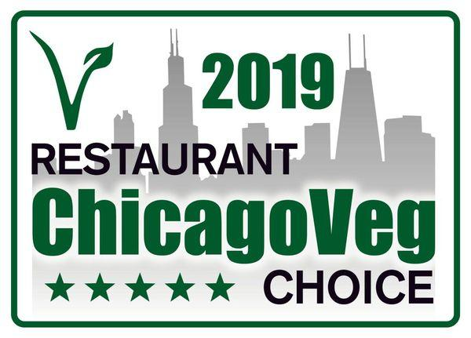
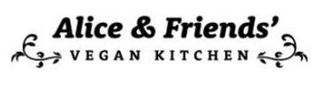
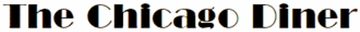

ChicagoVeg Choice 2019

Thank You to all 120+ ChicagoVeg members who contributed to determine what the most popular Chicagoland Vegan/Vegetarian restaurants are!
Per the results of the poll the top three restaurants are:


You can click on the restaurants' logos to visit their websites.